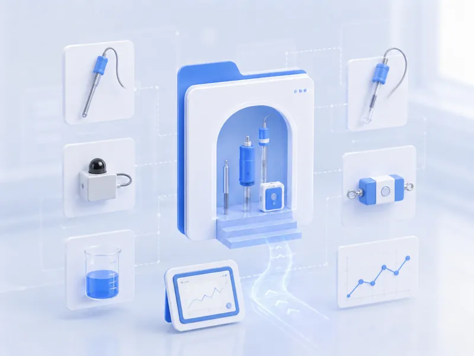
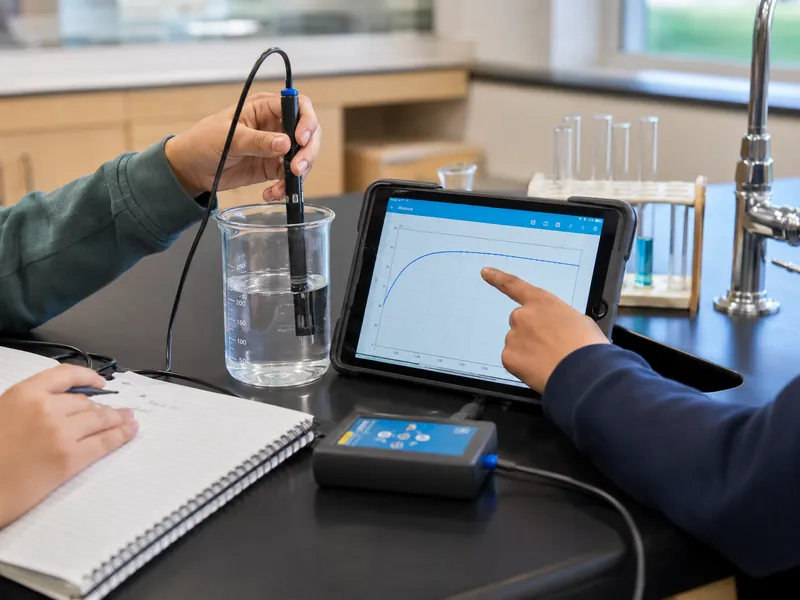
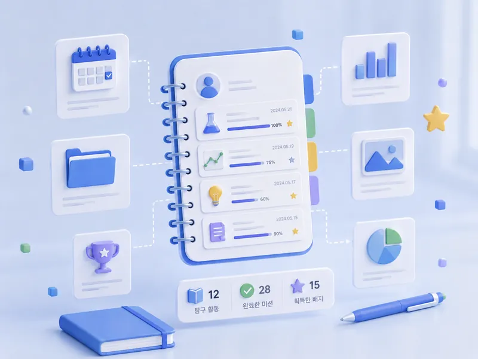
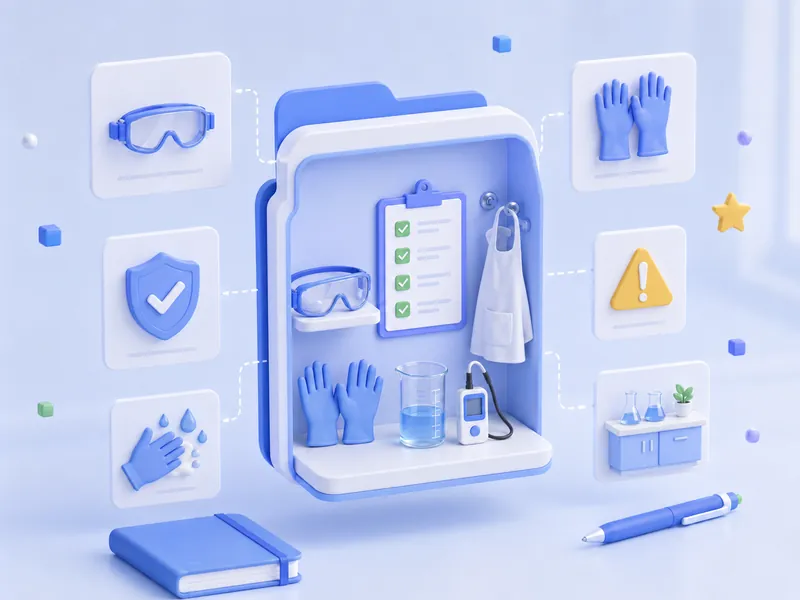

STEP 01
센서로 재기
온도·조도·압력·전류… 무엇을 어떤 센서로 재는지 알아보고 장치를 연결합니다.
센서로 재고, 값을 모으고, 그래프로 따져 보고, 결과를 나눕니다. 어느 실험을 골라도 이 네 걸음은 같습니다.

온도·조도·압력·전류… 무엇을 어떤 센서로 재는지 알아보고 장치를 연결합니다.
측정한 값을 표에 적거나 CSV 파일을 끌어다 놓으면 그래프가 바로 그려집니다.
데이터 실험실에서 축을 바꾸고 값을 변환해 굽은 그래프를 곧게 펴 봅니다.
보고서를 쓰고 다른 모둠 그래프에 별점을 주며, 전자칠판으로 발표합니다.

실험마다 다르지만, 한 차시를 이렇게 잡으면 예상 그리기·데이터 실험실·개념 확인까지 넣고도 시간이 맞습니다.
측정 시간이 긴 실험이면 보고서와 모둠 공유를 줄이고, 그래도 모자라면 데이터 실험실을 다음 차시 도입으로 옮기면 됩니다. 저장해 둔 값이 그대로 남아 있습니다.

교과서 단원별 센서 실험을 모아 두었습니다. 카드를 누르면 준비물·순서·주의점·읽는 법이 나오고, 고른 그대로 데이터 입력표와 보고서 질문이 자동으로 채워집니다.
출처 — 서울시교육청 MBL 교수학습자료집 · 이지메이커 수업사례집. 같은 실험이라도 업체마다 장비 다루는 법이 달라 절차를 따로 실었습니다.
학생 화면에서 참여 없이 실험 도감 보기를 누르면 코드가 없어도 둘러볼 수 있습니다.
측정으로 끝내지 않습니다. 축을 바꾸고 값을 변환하면 굽은 그래프가 곧게 펴진다는 것, 그 직선의 기울기가 곧 과학 법칙이라는 것을 학생이 손으로 확인합니다.
사진은 분위기를 맡습니다이 페이지의 그림들은 수업의 느낌을 전할 뿐, 설명하지 않습니다.
설명은 모식도가 맡습니다수치·축·연결은 전부 벡터 그림입니다. 확대해도 흐려지지 않고 화면낭독기도 읽습니다.
실험을 하나 고르고 참여코드를 발급하면 준비는 끝입니다. 나머지는 화면을 보면서 수업의 속도를 조절하는 일입니다.


실험마다 주의점이 카드에 함께 뜹니다. 센서 수업에서 자주 나오는 것들을 먼저 짚어 둡니다.
주사기는 밀대 끝만몸통을 손으로 감싸 쥐면 체온 때문에 기체 온도가 올라가 압력값이 오염됩니다.
백열등 대신 LED백열등·삼파장은 적외선 발열이 커서 용기 안이 35 ℃를 넘으면 그래프가 반대로 나옵니다.
뜨거운 기구는 내열 장갑80 ℃ 물·핫플레이트·켜 둔 전등은 매우 뜨겁습니다. 옮길 때는 집게를 씁니다.
센서에 액체가 닿지 않게손소독제·물이 센서 회로 부분에 닿으면 스며들어 고장 납니다. 수중용이 아닌 센서는 물에 담그지 말고, 젖은 손으로 전기 회로를 만지지 않습니다.